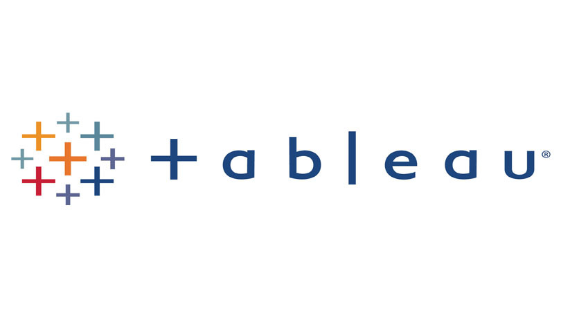
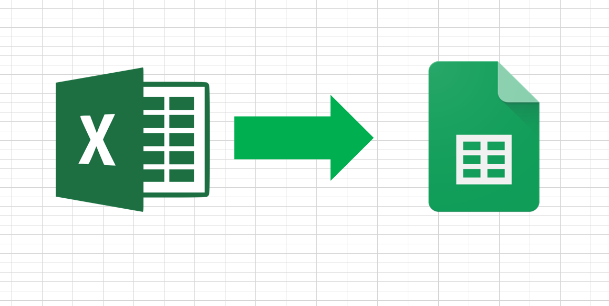
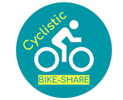

It is undeniable that Artificial Intelligence is one of the rapidly developing fields in Computer Science, and with all of its connotations and implications, the public's view of Artificial Intelligence is extremely important.
Is Artificial Intelligence dangerous? Will it destroy humanity? Will it send humanity into a golden age?
In this project, we Performed Sentiment Analysis to investigate Public's perception on Artificial Intelligence.


In this project, I investigated the number of people that contracted Corona Virus (Covid-19) disease globally, and the number of people that died of it.

Clean Data is a Good Data, right? I had fun doing this project. I explored the data to check for quality issues, then I went on to fill in some missing values where applicable, changed data types where necessary, created new columns and splitted some, removed duplicate data and deleted unwanted columns.

This is the collection of my Tableau projects on topics including; Sales, Customer Analysis, Executive Dashoard for KPI evaluation.

This Repository holds the projects I have done using Spreadsheet programs (Microsoft Excel and Google Sheet).

The project was built on the hypothesis of; whether there's correlation between Company Name, Movie Budget, and Revenue. The project was done completely in python, using Jupyter notebook.

A Google Data Analytics Professional Certificate Capstone Project. I was charged with the business task: "How Does a Bike-Share Navigate Speedy Success? So I investigated how annual members and casual riders use Cyclistic bikes differently in order to increase annual membership by converting casual riders to annual members.